Motion of a puck on the frictionless surface of a paraboloïd.
Here is the surface, z = p( 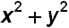), (we have set, p=1) :
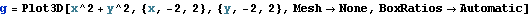
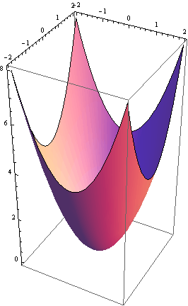
Initial conditions for the puck : x[0]=0, x’[0]=-vx0, y[0]=y0, y’[0]=0, z[0]=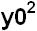, z’[0]=0. Its motion results from the conjugated action of gravity (g) and of the contact with the surface. Friction is absent.
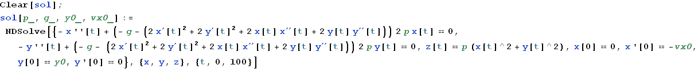

A typical trajectory :
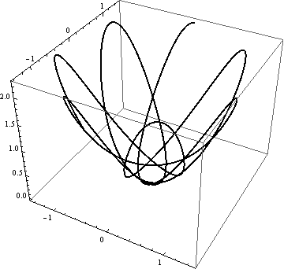
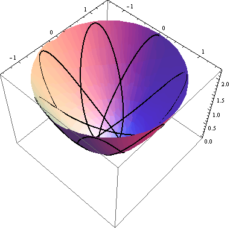

By suitably adjusting the initial conditions you can obtain a stable circular trajectory : Take 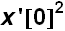+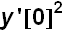 =2g z[0].
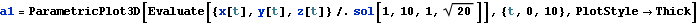
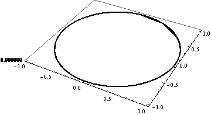

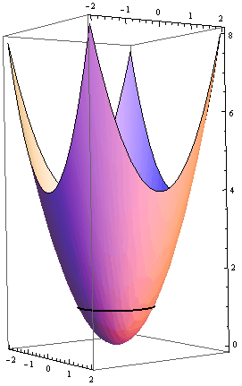
What if gravity is absent ? The only force is the upward action due to the contact with the surface : the puck “rises” spiraling in the direction of positive z !
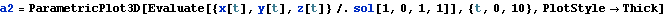
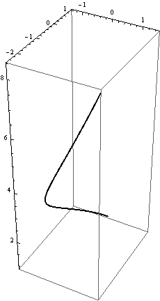
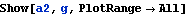
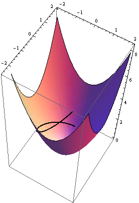

Comment : in all cases, the puck minimizes the constraint (Gauss principle). If gravity is absent this is equivalent to saying that the puck looks for the least curvature or equivalently it follows a geodesic. If tangential friction is taken into account (f=k N), the minimim constraint principle remains valid so that dissipation is also minimized. This is a special example of the so-called Minimum entropy principle.

Addendum : Newton equations of motion.
When a particle is forced to stay on the surface, z= f(x,y), and is acted upon by a force F=(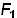, 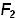, 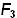), the equations of motion are :
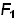-mx’’+(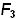-m z’’)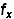=0 and 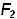-my’’+(-m z’’)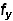=0
Verify that the (square of the) constraint, 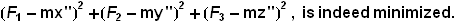
Remember that :
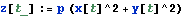
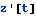
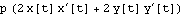
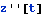
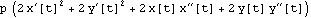